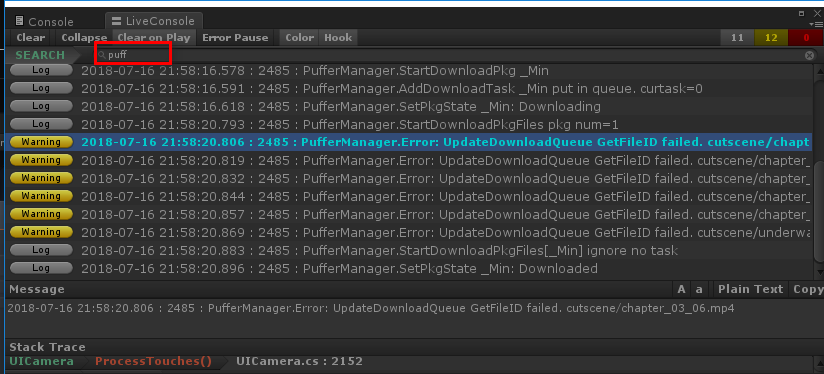
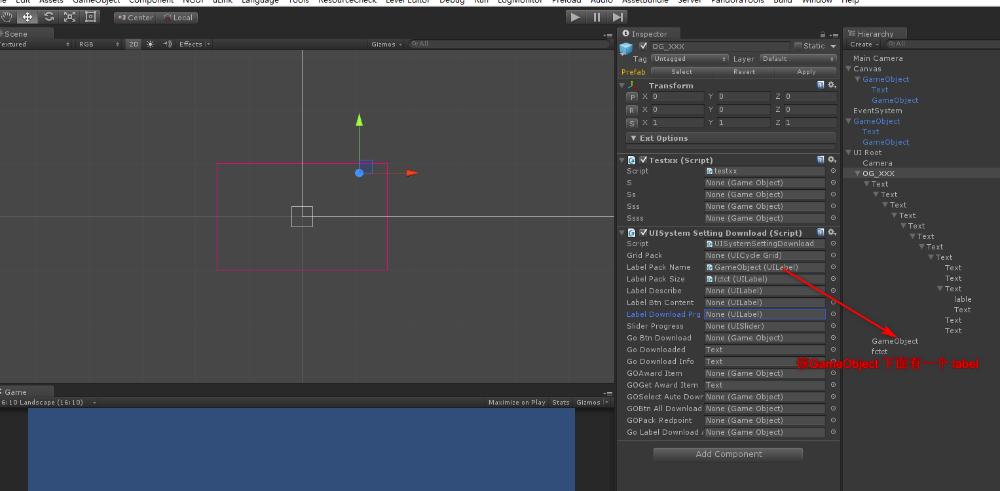
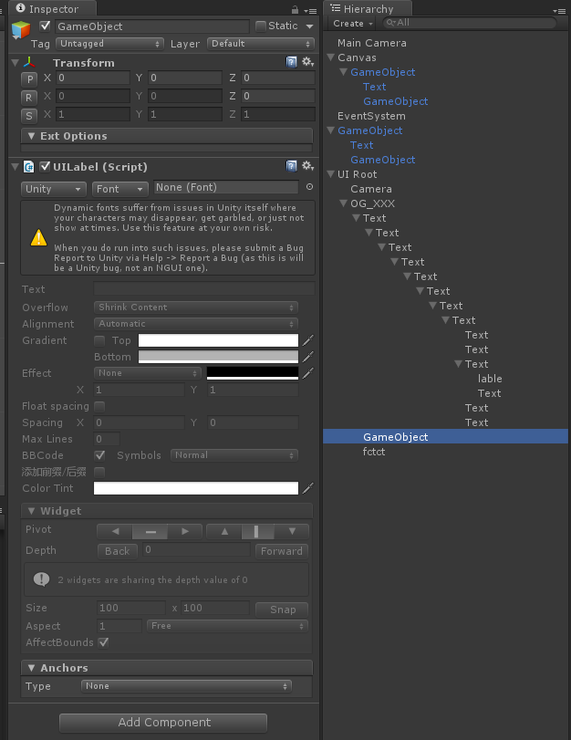
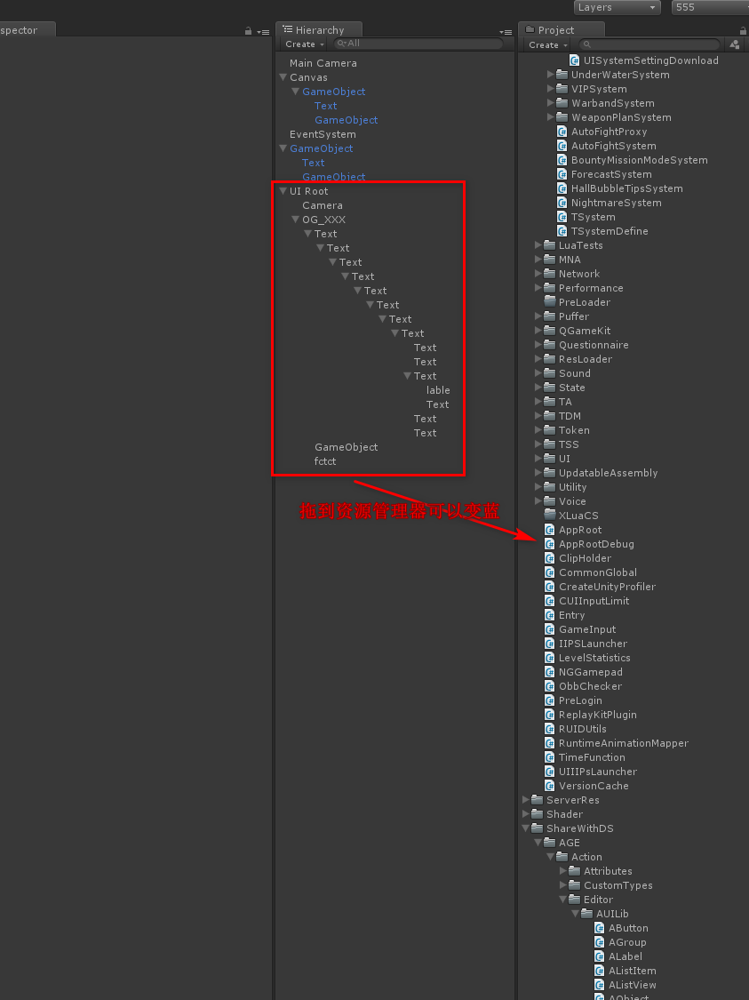

|
|
☰ 目录
20180716 unity调试技巧1- console框一般是在菜单 Windows/Live Console 调出来的。 调试定位到某个文件后， 在文件中一般会写如下这样的日志信息： 在日志信息里输出关键词，可以快速定位。  如果在代码中时一个 GameObject，可以在debug的时候，获得它的base的name， 这个name 就是预制体的名称。 如果是Label，就需要搜相关的名字 一般讲组件挂在另一个下面，方便管理。 如果脚本中，变量声明为GameObject，则可以挂除GameObject之外（类型不匹配）的任何组件。 如果声明为Label，则可以挂Label外，假设一个物体下面有Label对象，也可以。这将直接引用到该物体下面的Label。  如下图， GameObject下面挂了一个Label，就可以赋值给上面的那个Label标签（那个变量会直接引用到该标签）。  在场景中是白色的组件，代表还没有保存，这个是在资源加载的时候是不能被加载的。需要将它拖到资源管理器中，它会保存，同时字体变蓝。  |